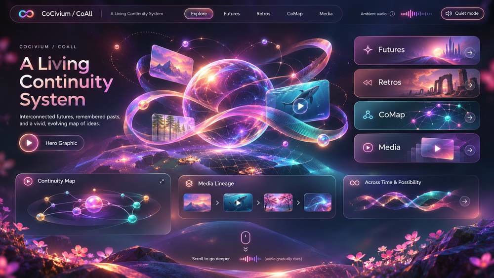

← CoPre · Typed semantic twin JSON
One living image, nine source-connected doorways
The image is a concept illustration. This accessibility-oriented overlay makes its *ideas* navigable to current public source files. It does not make the pictured navigation, player, ambient audio or timelines into working product functionality.

CoPre source Futures Retros CoMap Media Continuity map Media lineage Across time Audio policyThis reinterpretation uses the existing public SVG preview. The user-attached image is a different exact-byte variation and has not been published as a binary. Source links are independently addressable; the overlay hotspot geometry is experimental and needs device verification.
Every region also works without the image
- CoPre / HeroPurpose, evidence and starting point
- FuturesSuccessor and prospective pathways
- RetrosPredecessor continuity and unscanned history
- CoMapSource-bound navigation and relationships
- MediaRecoverable visual seeds
- Continuity MapTyped source graph, not a live global bus
- Media LineageSource → transformation → projection
- Across TimeMeasured acceptance and future experiments
- Quiet AudioSilent default, opt-in controls and no-audio preference
What counts as a rich-media connection?
A real connection references typed source identity, semantic region, permitted action, receiver-relative output and a recoverable route. A line, button or animated ribbon alone is not evidence of integration. Images, diagrams, timelines, maps, audio, print, language translations and spatial views can all use these same typed relations while maintaining different accessible renderings.